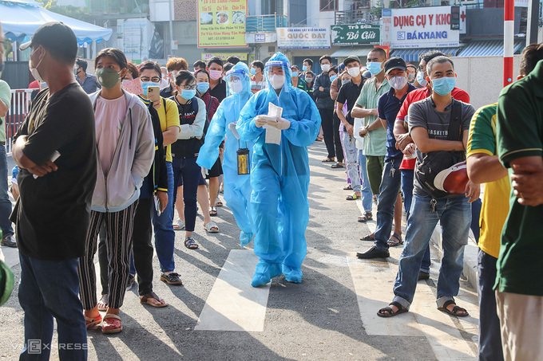

(hover the facebook share icon)
(hover the facebook share icon)
Đợt lấy mẫu diện rộng đầu tiên được TP HCM thực hiện khi ổ dịch tại Hội thánh truyền giáo Phục Hưng ở phường 3, quận Gò Vấp, phát hiện hôm 26/5. Ngành y tế TP HCM nhận định dịch đã thấm sâu trong cộng đồng qua nhiều chu kỳ.
Trong đó, thành phố tập trung lấy mẫu những nơi nguy cơ cao như Gò Vấp và phường Thạnh Lộc, quận 12 (2 khu vực áp dụng Chỉ thị 16 trong đợt giãn cách xã hội đầu tiên); các đơn vị bầu cử nơi có hội viên Hội thánh Truyền giáo Phục hưng cư ngụ; hơn 300.000 công nhân, người lao động tại các khu chế xuất, khu công nghiệp, khu công nghệ cao...
Với mục tiêu lấy khoảng 100.000 mẫu mỗi ngày, thành phố lập 400 đội lấy mẫu, bao gồm
Kết quả gần 20 ngày (26/5 đến 13/6), ngành y tế thành phố đã lấy gần 560.300 mẫu xét nghiệm.
Đợt lấy mẫu thứ hai được TP HCM thực hiện khi hàng loạt ổ dịch mới xuất hiện ở các chợ đầu mối, khu công nghiệp, khu dân cư. Dịch lan ra 22/22 quận, huyện với tổng số ca nhiễm hơn 3.000. Bằng phương pháp lấy mẫu gộp (10, 15) với số lượng mẫu lấy là 500.000 người mỗi ngày, thành phố đặt mục tiêu hoàn thành lấy mẫu 5 triệu người trong 10 ngày (từ 26/6 đến 5/7).
Để thực hiện kế hoạch này:
Kết quả đợt xét nghiệm này, ngành y tế thành phố lấy hơn gần 1,7 triệu mẫu.
Người dân TP HCM xếp hàng chờ xét nghiệm Covid-19 tại Bệnh viện Quân y 175 (quận Gò Vấp), ngày 6/7.Ảnh: Quỳnh Trần
Đánh giá về đợt xét nghiệm, Phó chủ tịch UBND thành phố Ngô Minh Châu cho biết
Việc lấy một lượng mẫu rất lớn nhưng năng lực thực tế không đạt. Điều này đã phát sinh nhiều vấn đề như năng lực không đảm bảo, áp lực chỉ tiêu lấy mẫu lớn dẫn đến nhập liệu, chất lượng lấy mẫu không cao. "Tỷ lệ phát hiện các ca F0 thấp, chỉ đạt 0,06-0,08%. Điều này cho thấy công sức đổ ra nhiều nhưng kết quả thu được không cao, gây lãng phí nhân lực, thời gian",ông Châu nói.
Vì vậy, ngày 5/7 TP HCM lập Trung tâm điều phối lấy mẫu xét nghiệm để việc lấy mẫu đi vào chiều sâu, hiệu quả hơn. Thành phố cũng thay đổi chiến lược, lấy mẫu theo trọng tâm, trọng điểm, tập trung lấy ở những nơi khả năng lây nhiễm rất cao như chợ đầu mối, khu đông dân cư, nhất là các khu nhà trọ nhỏ hẹp nhưng đông công nhân.
Trong đợt xét nghiệm diện rộng thứ ba, TP HCM tính thực hiện trong một tháng từ 15/8 đến 15/9 với mục tiêu lấy mẫu toàn bộ người dân ở các vùng nguy cơ (vùng đỏ, cam, vàng, xanh) bằng phương pháp RT-PCR và cả test nhanh theo mẫu gộp. Trong đó, nguyên tắc lấy mẫu theo "trọng tâm, trọng điểm" nhằm sớm phát hiện ca Covid-19, thu hẹp "vùng đỏ" mở rộng "vùng xanh".